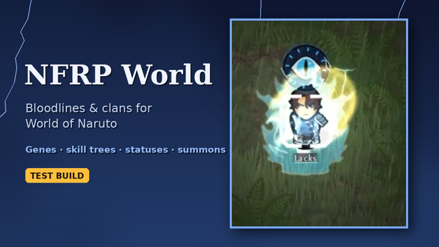

NFRP World
A RimWorld mod that brings the clans, bloodlines and techniques of the Naruto Forum Role-play (NFRP) archive into World of Naruto: about a hundred skill trees, ninja builds, hidden villages at war, ranked missions, summons, alchemy, seals and more.
Requires: Harmony, Taran Magic Framework and World of Naruto, loaded in that order, then NFRP World. Works on RimWorld 1.6 and 1.7.
New here? Read Getting started, then browse the technique trees.
1001techniques
104trees
139seals
243items
Start here
Getting startedWhat to install, what changes when you start a colony, and where to find everything.Ninja buildsHow the build decides what a ninja can learn, after NFRP's Specialist rules.Clans and bloodlinesClans come from genes, and the only way to take another clan's power is surgery.Summons, contracts and companionsGolems, fabled animals, a bone steed and animals sealed into scrolls.Contract bondsTwo colonists bound soul to soul, with techniques that only work between them.Alchemy and craftingThe alchemy table, disciplines, the scribe desk and the crafting arts.Enchantment sealsPressing power into weapons and armour.Factions and missionsWho's out there, the war, the truce and ranked missions.